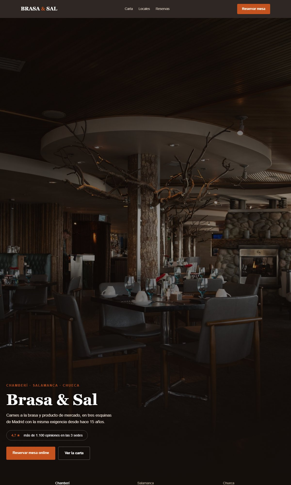

Brasa & Sal es un grupo de restauración familiar con 15 años de historia y tres locales en Madrid (Chamberí, Salamanca, Chueca). Cada restaurante tiene por su cuenta una reputación estupenda — el problema es que sus fichas de Google, creadas en momentos distintos y por personas distintas, no siguen ningún criterio común.
Resultado: quien busca «restaurante de brasa Madrid» unas veces encuentra el local que no le toca por zona, otras encuentra información desactualizada, y en ningún caso queda claro que los tres locales son del mismo grupo y con la misma calidad.
| Área | Hallazgo | Gravedad |
|---|---|---|
| Fichas de Google | Categorías, horarios y fotos distintos en los 3 locales — unos salen como «restaurante» y otros como «asador», lo que confunde al algoritmo de búsqueda local. | Alta |
| NAP (nombre/dirección/teléfono) | El nombre del grupo aparece de 4 formas distintas entre la web, Google y las plataformas de reserva — una señal negativa para el SEO local. | Alta |
| Reservas | Solo por teléfono y en el horario de cada local — se pierde toda la demanda que mira y decide fuera de esas horas. | Alta |
| Identidad de marca | Nada conecta los 3 locales en internet — cada uno se percibe como un negocio independiente, sin aprovechar la reputación conjunta. | Media |
4,8★ · Horario correcto · Sin fotos recientes
4,6★ · Horario desactualizado · Buenas fotos
4,7★ · Sin horario de cocina · Sin fotos
Cada local necesita su propia página (en SEO local, Google premia la relevancia geográfica concreta), pero los tres tienen que seguir exactamente el mismo criterio de marca, categoría y datos de contacto.
El selector de local (visible en el diseño final) es la pieza clave: quien entra no tiene que adivinar nunca cuál de los tres es «el suyo».

La portada de Brasa & Sal — la valoración conjunta visible desde el primer segundo y las pestañas de local justo debajo.
Las decisiones de esta página:
El objetivo no es tener un botón de «reservar»: es diseñar el camino entero desde que alguien entra en la página hasta que la mesa queda confirmada.
El recordatorio automático (email o WhatsApp, 24 h antes) responde a un problema que no estaba en el diagnóstico inicial pero que mencionaron los propios locales en la reunión de arranque: el nivel de reservas que no se presentan los fines de semana.
«Los tres locales llevaban 15 años ganándose la reputación por separado. Solo hacía falta que Google entendiera que son la misma casa.»